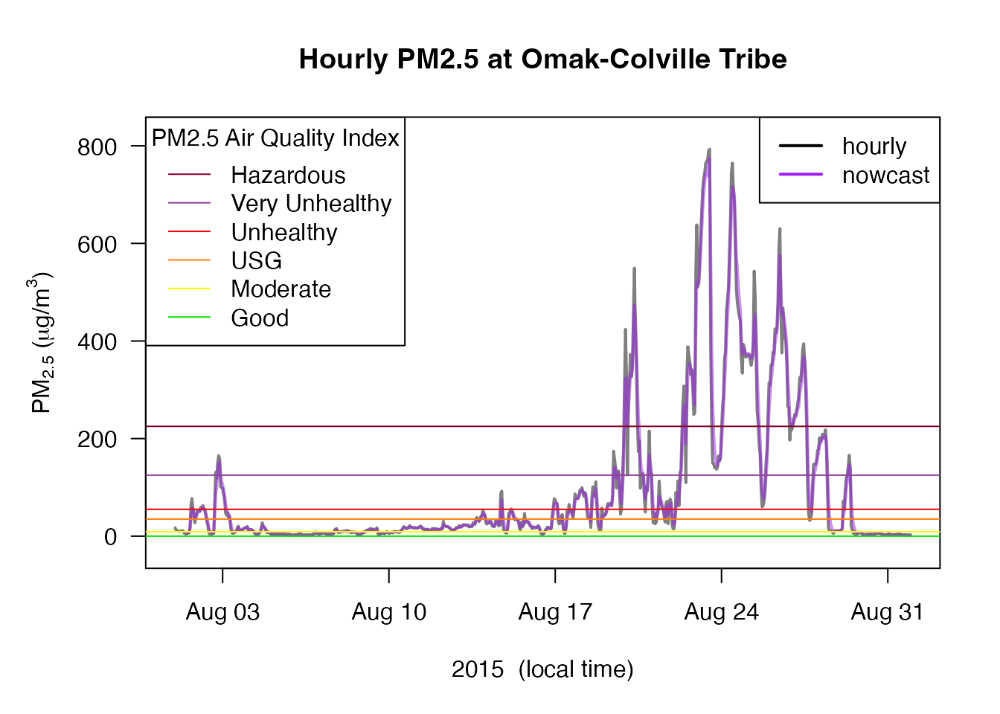

vignettes/articles/NowCast.Rmd
NowCast.RmdThis vignette documents the monitor_nowcast() function,
which converts a mts_monitor object’s values to NowCast values.
We provide details on the NowCast algorithm and our implementation of
it. We also provide examples to highlight specific attributes and
potential points of confusion in the algorithm.
This vignette also briefly covers the monitor_aqi()
function, which uses the monitor_nowcast() function to
convert raw PM2.5 data into NowCast-based AQI values.
NowCast is an air quality data smoothing algorithm that puts an emphasis on recent values when measurements are unstable, and approaches a long-term (e.g. 12-hour) average when measurements are stable.
The original algorithm, known as the Conroy method, was developed in 2003 to make real-time air quality measurements roughly comparable to established regulatory air quality health thresholds (e.g. 24‐hour PM2.5 standards). However, that method was shown to be slow to respond to rapidly changing air quality conditions, which, at best, reduced public confidence in disseminated AQI values an, at worst, had the potential to adversely affect the health of those in high impact areas (e.g. near wildfires).
In response, EPA developed a new method – the Reff method – in 2013 to be more responsive to rapidly changing air quality conditions. The AirMonitor package provides support for applying the new NowCast algorithm to hourly PM2.5 data, though theoretically it could be applied to regular-interval time series data of any type, including other criteria pollutants.
Algorithm specifics are provided below.
Sources:
The NowCast value for a given hour can be calculated as follows:
\[ NowCast = \frac{\sum_{i=1}^{12}{w^{i-1}c_i}}{\sum_{i=1}^{12}w^{i-1}} \]
where \(i\), \(w\) and \(c\) are as defined in the sections below.
Source:
For PM2.5 data, the NowCast algorithm uses hourly averages from the prior 12 clock hours.
The hourly averages are denoted below by \(c_i\), where \(i\) represents the number of hours before present. For example, \(c_1\), \(c_2\), \(c_3\), \(...\), \(c_N\) represent the hourly averages for the most recent 1, 2, 3, \(...\), \(N\) hours.
Source:
Using data points as specified above, define the weight factor \(w^*\) as follows:
\[ w^* = 1- \frac{c_{max}-c_{min}}{c_{max}} = \frac{c_{min}}{c_{max}} \]
where
NowCast-related literature usually gives the equation for \(w^*\) in one of two basic forms, both of which are included above for reference. Note that both forms are equivalent.
Sources:
Before plugging into the NowCast equation, \(w*\) is updated to \(w\) for PM2.5 and PM10 as follows:
\[ w = \begin{cases} w^* & \text{if} & w^*>\frac{1}{2} \\ \frac{1}{2} & \text{if} & w^*\leq \frac{1}{2} \\ \end{cases} \]
Source
For PM2.5, the NowCast equation can be expanded as follows:
\[ NowCast = \frac {w^0c_1 + w^1c_2 + w^2c_3 + w^3c_4 + w^4c_5 + w^5c_6 + w^6c_7 + w^7c_8 + w^8c_9 + w^9c_{10} + w^{10}c_{11} + w^{11}c_{12}} {w^0 + w^1 + w^2 + w^3 + w^4 + w^5 + w^6 + w^7 + w^8 + w^9 + w^{10} + w^{11}} \]
Note that:
When written this way, it is easy to see that in the extreme case where \(w = 1\) (i.e. if \(c_{min} = c_{max}\)) the equation above reduces to:
\[ NowCast = \frac{\sum_{i=1}^{12}{c_i}}{12} \]
which is just a simple 12-hour arithmetic average. Incidentally, all 12 hourly averages and the 12-hour average itself would all be equivalent in this case.
In the case of highly variable PM2.5 data, \(w\) would be set to the minimum value of \(1/2\), and the most recent data would carry the majority of the weight in the equation above.
The NowCast algorithm ignores terms corresponding to hours for which a valid observation is not available. For example, suppose PM2.5 is invalid for all but the first three and last three hours of a 12-hour period. Then the PM2.5 NowCast equation takes the following form:
\[ NowCast = \frac {w^0c_1 + w^1c_2 + w^2c_3 + \color{gray}{\text{[note: middle values ignored]}} + w^9c_{10} + w^{10}c_{11} + w^{11}c_{12}} {w^0 + w^1 + w^2 + \color{gray}{\text{[note: middle values ignored]}} + w^9 + w^{10} + w^{11}} \]
Minimum data availability requirements do apply, however. See the following section for details.
To get a valid NowCast value, the NowCast algorithm simply requires valid data for at least two of the three most recent clock hours. This means that a valid NowCast value can be calculated from as little as two valid hours, even if 12 hours are typically used in the calculation.
However, note that https://en.wikipedia.org/wiki/NowCast_(air_quality_index) says:
Because the most recent hours of data are weighted so heavily in the NowCast when PM levels are changing, EPA does not report the NowCast when data is missing for c1 or c2.
While this seems like a reasonable approach, we could not find a
source for this statement (in the Wikipedia page sources or elsewhere).
We take a compromise approach and still allow valid NowCast values to be
calculated when c2 is invalid but return NA when
c1 is invalid.
includeShortTerm
As mentioned above, the NowCast algorithm only requires two valid
hours to calculate valid values. Does this mean that the
monitor_nowcast() function can begin reporting valid values
after the second hour in the data (assuming the first two hours are both
valid)?
We assert that it would be inappropriate to do so, usually.
In most cases a user will have created a mts_monitor object
using one of the ~_load(), functions, which return data for
a specific period of time. Data before this period is not necessarily
invalid, it was simply not retrieved. But the function itself has no way
of knowing whether such earlier data exists, so it has no choice but to
consider earlier hours “invalid”. This means that, if followed
by-the-book, the NowCast algorithm could return different values for a
given hour depending on whether or not the earlier data had been
retrieved. This is not a desirable behavior, so, by default, the
monitor_nowcast() returns invalid NowCast values until the
\(N\)th hour of data.
However, we provide a manual override in
includeShortTerm = TRUE which causes the function to return
valid values as per the bare-bones data availability requirements
described above, treating the hours before the beginning of the data as
invalid. Thus, it can return “valid” NowCast values as early as the
second (valid) hour in the data.
This argument may be useful (or even appropriate) for datasets where the beginning of the data truly corresponds to the beginning of the monitoring, such as when a new monitor has just been installed. In this case, data prior to the first hour is truly invalid since it does not exist. The argument may also be useful for field personnel looking to ensure that their monitor has been successfully plugged in to the data processing pipeline, even if the values themselves are not truly representative of the data for the past \(N\) hours.
In the NowCast literature we find no mention of negative values,
which, while aphysical, are common in air quality monitoring data. Thus,
we do not adjust negative values up to zero in the
monitor_nowcast() function itself.
Negative values should always be handled prior to converting raw data
to NowCast or AQI values. All of the ~_load() functions
handle negative values by lifting them to zero as part of the
data loading process.
version
The version argument sets defaults for the number of
hours in the lookback \(N\)
(numHrs), the minimum weight factor \(c_{min}\) (weightFactorMin),
and the number of digits to which the final data is truncated
(digits).
version='pm25' (default)
numHrs <- 12weightFactorMin <- 0.5digits <- 1version='ozone'
numHrs <- 8weightFactorMin <- NAdigits <- 3version='pmAsian'
numHrs <- 3weightFactorMin <- 0.1digits <- 1The default setting is version = 'pm25' since this is
the parameter most commonly stored in mts_monitor objects.
version = 'ozone' supports the O3 NowCast as described
above.
version='pmAsian' supports an alternative shorter-term
NowCast as proposed here: https://aqicn.org/faq/2015-03-15/air-quality-nowcast-a-beginners-guide/
Although the NowCast algorithm itself supports PM10, we do not
currently provide functionality for this parameter in the
monitor_nowcast() function.
The EPA uses an Air Quality Index to put different pollutants on the same scale. From their site:
Think of the AQI as a yardstick that runs from 0 to 500. The higher the AQI value, the greater the level of air pollution and the greater the health concern. For example, an AQI value of 50 represents good air quality with little potential to affect public health, while an AQI value over 300 represents hazardous air quality.
We provide the monitor_aqi() function to convert the
PM2.5 data in a mts_monitor object into NowCast-based AQI
values in the 0-500 range.
The following examples demonstrate the functionality of
monitor_nowcast() and specifics of its implementation.
For the following examples we will use the Northwest Megafires data from the AirMonitor package. In particular, we will look at PM2.5 data from Omak, WA, which was heavily impacted by smoke from wildfires during the second half of August, 2015:
library(AirMonitor)
Omak_ID <- "decef259cdefa79f_530470013_04"
# Recipe to obtain monitoring data for Omak, WA
Omak <-
# start with NW Megafires dataset
NW_Megafires %>%
# select the Omak time series
monitor_select(Omak_ID) %>%
# filter to include only August, 2015
monitor_filterDate(20150801, 20150901)
In the code above we used the monitor_nowcast() function
to calculate PM2.5 NowCast values for the Omak mts_monitor
object. Let’s see if we can verify the function’s output for a single
hour.
Below is the Omak PM2.5 data for the first 12 hours of 8/21/15. Let’s see if we can verify the accuracy of the NowCast value for the last hour in this series, 8/21/15 Hour 11.
Omak_1 <-
Omak %>%
monitor_filterDatetime(2015082100, 2015082112, timezone = "UTC")
print(Omak_1$data) datetime decef259cdefa79f_530470013_04
1 2015-08-21 00:00:00 123.3
2 2015-08-21 01:00:00 80.2
3 2015-08-21 02:00:00 49.3
4 2015-08-21 03:00:00 101.8
5 2015-08-21 04:00:00 93.7
6 2015-08-21 05:00:00 143.2
7 2015-08-21 06:00:00 215.4
8 2015-08-21 07:00:00 130.6
9 2015-08-21 08:00:00 129.2
10 2015-08-21 09:00:00 59.8
11 2015-08-21 10:00:00 27.4
12 2015-08-21 11:00:00 46.3First we’ll pull out just the values themselves, and reverse them so the most recent values come first (i.e. so the vector represents \(c_1\), \(c_2\), \(...\), \(c_N\)).
example_1_values <-
Omak_1 %>%
monitor_getData() %>%
dplyr::pull(2) %>%
rev()
print(example_1_values) [1] 46.3 27.4 59.8 129.2 130.6 215.4 143.2 93.7 101.8 49.3 80.2 123.3Per the NowCast algorithm, we define \(w*\) as \(\frac{c_{min}}{c_{max}}\):
[1] 0.1272052We now define \(w\) based on \(w^*\) and the minimum weight factor; recall that \(w_{min}=\frac{1}{2}\) for PM2.5:
(w <- max(1/2, w_star))[1] 0.5Thus, the numerator of the NowCast equation for Hour 11
\[ w^0c_1 + w^1c_2 + w^2c_3 + w^3c_4 + w^4c_5 + w^5c_6 + w^6c_7 + w^7c_8 + w^8c_9 + w^9c_{10} + w^{10}c_{11} + w^{11}c_{12} \]
becomes the following:
\(0.5^0 \times 46.3 + 0.5^1 \times 27.4 +
0.5^2 \times 59.8 + 0.5^3 \times 129.2 + 0.5^4 \times 130.6 + 0.5^5
\times 215.4\) +
\(0.5^6 \times 143.2 + 0.5^7 \times 93.7 +
0.5^8 \times 101.8 + 0.5^9 \times 49.3 + 0.5^{10} \times 80.2 + 0.5^{11}
\times 123.3\)
which we can calculate in R as follows
(numerator <- sum(w^(0:11) * example_1_values))[1] 109.5958Meanwhile, the denominator
\[ w^0 + w^1 + w^2 + w^3 + w^4 + w^5 + w^6 + w^7 + w^8 + w^9 + w^{10} + w^{11} \]
becomes the following:
\(0.5^0 + 0.5^1 + 0.5^2 + 0.5^3 + 0.5^4 + 0.5^5 + 0.5^6 + 0.5^7 + 0.5^8 + 0.5^9 + 0.5^{10} + 0.5^{11}\)
which we can calculate in R as follows
(denominator <- sum(w^(0:11)))[1] 1.999512Dividing the numerator by the denominator gives a value of
[1] 54.81126which we truncate to one decimal place for a final NowCast value of 54.8 for 2015-08-21 11:00 local time.
So how does this compare to our monitor_nowcast() output
for the same hour.
Omak %>%
monitor_nowcast() %>%
monitor_filterDatetime(2015082111, 2015082112, timezone = "UTC") %>%
monitor_getData() %>%
dplyr::pull(Omak_ID)[1] 54.8Right on!
So we have verified the calculation for a period with 12 valid hours. But how does the function handle missing data periods? Let’s take a look at a short period of missing data to find out. We will invalidate a single hour and see how the NowCast algorithm responds.
# Create Omak_2 with one value missing
Omak_2 <- Omak
Omak_2$data[564, 2] <- NA
Omak_2 %>%
monitor_filterDatetime(2015082412, 2015082500, timezone = "UTC") %>%
monitor_getData() datetime decef259cdefa79f_530470013_04
1 2015-08-24 12:00:00 461.7
2 2015-08-24 13:00:00 486.2
3 2015-08-24 14:00:00 510.4
4 2015-08-24 15:00:00 583.0
5 2015-08-24 16:00:00 645.7
6 2015-08-24 17:00:00 745.5
7 2015-08-24 18:00:00 NA
8 2015-08-24 19:00:00 711.0
9 2015-08-24 20:00:00 683.3
10 2015-08-24 21:00:00 589.8
11 2015-08-24 22:00:00 504.6
12 2015-08-24 23:00:00 478.5Here we see that the monitor data is missing for 18:00. We want to verify that this hour is properly excluded from the NowCast calculation for subsequent hours. We also want to ensure that NowCast returns valid values for all hours in the vicinity, since all hours meet the minimum data availability requirements (i.e. two of three most recent hours valid).
Let’s see if we can verify the accuracy of the NowCast value for Hour 23.
We again begin by pulling out our vector of values \(c_1\), \(c_2\), \(...\), \(c_N\)
example_2_values <-
Omak_2 %>%
monitor_filterDatetime(2015082412, 2015082500, timezone = "UTC") %>%
monitor_getData() %>%
dplyr::pull(2) %>%
rev()
print(example_2_values) [1] 478.5 504.6 589.8 683.3 711.0 NA 745.5 645.7 583.0 510.4 486.2 461.7and calculating \(w*\) and \(w\)
w_star <- min(example_2_values, na.rm = TRUE)/max(example_2_values, na.rm = TRUE)
(w <- max(1/2, w_star))[1] 0.6193159This time our numerator and denominator should both exclude the 6th term, since \(c_6\) is invalid. So we have
validIndexes <- which(!is.na(example_2_values))
numerator <- sum(w^(validIndexes - 1) * example_2_values[validIndexes])
denominator <- sum(w^(validIndexes - 1))
numerator/denominator[1] 543.896We truncate the value above to one decimal place for a final NowCast value of 543.8 for 2015-08-24 23:00.
So how does this compare to our monitor_nowcast() output
for the same hour?
Omak_2 %>%
monitor_nowcast() %>%
monitor_filterDatetime(2015082423, 2015082500, timezone = "UTC") %>%
monitor_getData() %>%
dplyr::pull(Omak_ID)[1] 543.8Excellent!
A quick look at the monitored data alongside the NowCast data shows that all NowCast hours are valid except for the c1 moment when the monitoring data is also invalid.
tbl <-
Omak_2 %>%
monitor_filterDatetime(2015082412, 2015082500, timezone = "UTC") %>%
monitor_getData()
tbl$nowcast <-
Omak_2 %>%
monitor_nowcast() %>%
monitor_filterDatetime(2015082412, 2015082500, timezone = "UTC") %>%
monitor_getData() %>%
dplyr::pull(Omak_ID)
print(tbl) datetime decef259cdefa79f_530470013_04 nowcast
1 2015-08-24 12:00:00 461.7 403.1
2 2015-08-24 13:00:00 486.2 444.7
3 2015-08-24 14:00:00 510.4 477.6
4 2015-08-24 15:00:00 583.0 530.3
5 2015-08-24 16:00:00 645.7 588.0
6 2015-08-24 17:00:00 745.5 666.8
7 2015-08-24 18:00:00 NA NA
8 2015-08-24 19:00:00 711.0 696.4
9 2015-08-24 20:00:00 683.3 688.9
10 2015-08-24 21:00:00 589.8 636.1
11 2015-08-24 22:00:00 504.6 569.4
12 2015-08-24 23:00:00 478.5 543.8We now look at a longer period of missing data, from the day prior on 8/23/15.
# Create Omak_3 with 5 missing values
Omak_3 <- Omak
Omak_3$data[538:542, 2] <- NA
Omak_3 %>%
monitor_filterDatetime(2015082312, 2015082400, timezone = "UTC") %>%
monitor_getData() datetime decef259cdefa79f_530470013_04
1 2015-08-23 12:00:00 711.8
2 2015-08-23 13:00:00 734.0
3 2015-08-23 14:00:00 744.6
4 2015-08-23 15:00:00 763.8
5 2015-08-23 16:00:00 NA
6 2015-08-23 17:00:00 NA
7 2015-08-23 18:00:00 NA
8 2015-08-23 19:00:00 NA
9 2015-08-23 20:00:00 NA
10 2015-08-23 21:00:00 238.6
11 2015-08-23 22:00:00 149.9
12 2015-08-23 23:00:00 149.5Here we see that the monitored data is missing for Hours 16-20. We again want to verify that these hours are properly excluded from the NowCast calculation for subsequent hours. This time we also want to ensure that NowCast returns invalid values for hours in which the minimum data availability requirements are not met (i.e. two of three most recent hours valid).
Let’s see if we can verify the accuracy of the NowCast value for Hour 23.
We again begin by pulling out our vector of values \(c_1\), \(c_2\), \(...\), \(c_N\)
example_3_values <-
Omak_3 %>%
monitor_filterDatetime(2015082312, 2015082400, timezone = "UTC") %>%
monitor_getData() %>%
dplyr::pull(2) %>%
rev()
print(example_3_values) [1] 149.5 149.9 238.6 NA NA NA NA NA 763.8 744.6 734.0 711.8and calculating \(w*\) and \(w\)
w_star <- min(example_3_values, na.rm = TRUE)/max(example_3_values, na.rm = TRUE)
(w <- max(1/2, w_star))[1] 0.5This time our numerator and denominator should both exclude the 4th-8th terms, since \(c_4\), \(c_5\), \(c_6\), \(c_7\) and \(c_8\) are invalid. So we have
validIndexes <- which(!is.na(example_3_values))
numerator <- sum(w^(validIndexes - 1) * example_3_values[validIndexes])
denominator <- sum(w^(validIndexes - 1))
numerator/denominator[1] 164.7973We truncate the value above to one decimal place for a final NowCast value of 164.7 for 2015-08-23 23:00.
So how does this compare to our monitor_nowcast() output
for the same hour?
Omak_3 %>%
monitor_nowcast() %>%
monitor_filterDatetime(2015082323, 2015082400, timezone = "UTC") %>%
monitor_getData() %>%
dplyr::pull(Omak_ID)[1] 164.7Again, right on!
Now we’ll look at the monitored data alongside the NowCast data to see how the validity of the NowCast data was affected by the missing monitored hours.
tbl <-
Omak_3 %>%
monitor_filterDatetime(2015082312, 2015082400, timezone = "UTC") %>%
monitor_getData()
tbl$nowcast <-
Omak_3 %>%
monitor_nowcast() %>%
monitor_filterDatetime(2015082312, 2015082400, timezone = "UTC") %>%
monitor_getData() %>%
dplyr::pull(Omak_ID)
print(tbl) datetime decef259cdefa79f_530470013_04 nowcast
1 2015-08-23 12:00:00 711.8 667.8
2 2015-08-23 13:00:00 734.0 700.9
3 2015-08-23 14:00:00 744.6 722.8
4 2015-08-23 15:00:00 763.8 743.3
5 2015-08-23 16:00:00 NA NA
6 2015-08-23 17:00:00 NA NA
7 2015-08-23 18:00:00 NA NA
8 2015-08-23 19:00:00 NA NA
9 2015-08-23 20:00:00 NA NA
10 2015-08-23 21:00:00 238.6 NA
11 2015-08-23 22:00:00 149.9 185.1
12 2015-08-23 23:00:00 149.5 164.7There’s a lot going on here so let’s walk through the data one step at a time.
Hours 12-15: NowCast data is valid because the monitored data is valid for all of the three most recent hours. Status: GOOD
Hour 16: This is the first hour for which the monitored data is invalid. NowCast should also return invalid for this c1 timestep. Status: GOOD
Hour 17: This NowCast value is invalid because the monitored data is only valid for one of the three most recent hours (Hour 15). Status: GOOD
Hours 18-20: NowCast is invalid since the monitored data is valid for none of the three most recent hours. Status: GOOD
Hour 21: This is the first hour for which the monitored data is valid again. However, NowCast still returns an invalid value this hour since the monitored data is only valid for one of the three most recent hours (Hour 21). Status: GOOD
Hour 22: This is the first hour for which the NowCast data is valid again. This is because the monitored data is again valid for two of the three most recent hours (Hours 21 and 22). Status: GOOD
Hour 23: NowCast data is valid because the monitored data is valid for all of the three most recent hours. Status: GOOD
So, it appears the monitor_nowcast() returns data that
has been correctly validated according to the NowCast algorithm and
associated data availability requirements.
A subtle point about the monitor_nowcast() function
which falls out of the example above: the “current” hour is
considered to be a part of the three “most recent clock hours”.
This may seem strange at first, but to understand why we chose this
approach, one must think about how the data is captured and how
measurement timestamps correspond to the period they actually
represent.
For particle pollution, measurements typically represent the mass of particles that accumulate on a filter during a set period of time, e.g. the past hour. Measurements come in at the end of the hour, but these measurements aren’t necessarily representative of conditions at the exact times of the measurements. Instead, they are actually representative of concentrations during the previous clock hour. For example, if an hourly measurement comes in at 12:00, the measurement is actually representative of data during Hour 11, NOT Hour 12. So we call the 12:00 measurement the Hour 11 data point.
This is really just a labeling convention, and it is no different from how we treat other datasets. For example, suppose you wanted to take an average of the low temperatures for every day in July. You would have to wait until August 1st to do so, since the temperature might still be dropping at the end of the day on July 31st. But does this mean you would call this value the average low temperature for August, since it wasn’t calculated until August? Of course not: the data belongs to July, even if it couldn’t be calculated until August. It is no different with particle pollution: the Hour 11 data belongs to Hour 11, even if it wasn’t calculated until 12:00. As a result of this convention, timestamps are usually an entire hour (or more) earlier than the time the measurements were actually taken (exact differences depend on several factors).
Another reason for including the “current” hour in the NowCast “three most recent hours” is for speed of updates. Suppose it is 12:04, and a measurement just came in at 12:00 (the Hour 11 measurement). It would be inappropriate to wait until 13:00 to calculate the updated NowCast value. For this reason, we calculate NowCast values using the monitored data for the “current” hour and the \(N-1\) prior hours.
includeShortTerm argument
For our final NowCast example we will explore the
includeShortTerm argument, including a demonstration of why
it defaults to FALSE.
Suppose we wanted to know the NowCast values for Omak for the first half of 8/25/15, since concentrations were extremely high at the time. Not thinking about the details of the NowCast algorithm, one might proceed by filtering in time before creating the nowcast:
Omak %>%
monitor_filterDatetime(2015082500, 2015082600, timezone = "UTC") %>%
monitor_nowcast() %>%
monitor_getData() datetime decef259cdefa79f_530470013_04
1 2015-08-25 00:00:00 NA
2 2015-08-25 01:00:00 NA
3 2015-08-25 02:00:00 NA
4 2015-08-25 03:00:00 NA
5 2015-08-25 04:00:00 NA
6 2015-08-25 05:00:00 NA
7 2015-08-25 06:00:00 NA
8 2015-08-25 07:00:00 NA
9 2015-08-25 08:00:00 NA
10 2015-08-25 09:00:00 NA
11 2015-08-25 10:00:00 NA
12 2015-08-25 11:00:00 373.7
13 2015-08-25 12:00:00 370.0
14 2015-08-25 13:00:00 364.6
15 2015-08-25 14:00:00 365.3
16 2015-08-25 15:00:00 370.5
17 2015-08-25 16:00:00 434.5
18 2015-08-25 17:00:00 455.2
19 2015-08-25 18:00:00 422.8
20 2015-08-25 19:00:00 338.0
21 2015-08-25 20:00:00 284.5
22 2015-08-25 21:00:00 236.4
23 2015-08-25 22:00:00 201.8
24 2015-08-25 23:00:00 149.1Unfortunately, the first 11 hours end up as invalid. But you read in
the documentation that includeShortTerm = TRUE will return
values for the second valid hour onwards. So you try again, this time
setting includeShortTerm = TRUE. Let’s check it out.
Omak %>%
monitor_filterDatetime(2015082500, 2015082600, timezone = "UTC") %>%
monitor_nowcast(includeShortTerm = TRUE) %>%
monitor_getData() datetime decef259cdefa79f_530470013_04
1 2015-08-25 00:00:00 NA
2 2015-08-25 01:00:00 456.3
3 2015-08-25 02:00:00 451.0
4 2015-08-25 03:00:00 420.7
5 2015-08-25 04:00:00 388.4
6 2015-08-25 05:00:00 389.9
7 2015-08-25 06:00:00 388.9
8 2015-08-25 07:00:00 382.7
9 2015-08-25 08:00:00 378.1
10 2015-08-25 09:00:00 375.9
11 2015-08-25 10:00:00 374.7
12 2015-08-25 11:00:00 373.7
13 2015-08-25 12:00:00 370.0
14 2015-08-25 13:00:00 364.6
15 2015-08-25 14:00:00 365.3
16 2015-08-25 15:00:00 370.5
17 2015-08-25 16:00:00 434.5
18 2015-08-25 17:00:00 455.2
19 2015-08-25 18:00:00 422.8
20 2015-08-25 19:00:00 338.0
21 2015-08-25 20:00:00 284.5
22 2015-08-25 21:00:00 236.4
23 2015-08-25 22:00:00 201.8
24 2015-08-25 23:00:00 149.1Nice. We were able to get NowCast values for all but the first hour!
But there’s a problem lurking. Setting
includeShortTerm = TRUE caused the
monitor_nowcast() function to treat hours prior to Hour 0
as invalid. It has no idea that valid data is available for this
period.
As an experiment, let’s see how the NowCast values would look if we calculated them from a larger dataset that includes the data prior to 8/25/15 Hour 0.
tbl <-
Omak %>%
# NowCast first
monitor_nowcast %>%
# then restrict times
monitor_filterDatetime(2015082500, 2015082600, timezone = "UTC") %>%
monitor_getData()
tbl$shortTerm_T <-
Omak %>%
# restrict times first
monitor_filterDatetime(2015082500, 2015082600, timezone = "UTC") %>%
# then NowCast
monitor_nowcast(includeShortTerm = TRUE) %>%
monitor_getData() %>%
dplyr::pull(Omak_ID)
print(tbl) datetime decef259cdefa79f_530470013_04 shortTerm_T
1 2015-08-25 00:00:00 514.5 NA
2 2015-08-25 01:00:00 485.9 456.3
3 2015-08-25 02:00:00 465.7 451.0
4 2015-08-25 03:00:00 411.1 420.7
5 2015-08-25 04:00:00 372.5 388.4
6 2015-08-25 05:00:00 382.8 389.9
7 2015-08-25 06:00:00 384.7 388.9
8 2015-08-25 07:00:00 376.4 382.7
9 2015-08-25 08:00:00 373.5 378.1
10 2015-08-25 09:00:00 374.9 375.9
11 2015-08-25 10:00:00 374.6 374.7
12 2015-08-25 11:00:00 373.7 373.7
13 2015-08-25 12:00:00 370.0 370.0
14 2015-08-25 13:00:00 364.6 364.6
15 2015-08-25 14:00:00 365.3 365.3
16 2015-08-25 15:00:00 370.5 370.5
17 2015-08-25 16:00:00 434.5 434.5
18 2015-08-25 17:00:00 455.2 455.2
19 2015-08-25 18:00:00 422.8 422.8
20 2015-08-25 19:00:00 338.0 338.0
21 2015-08-25 20:00:00 284.5 284.5
22 2015-08-25 21:00:00 236.4 236.4
23 2015-08-25 22:00:00 201.8 201.8
24 2015-08-25 23:00:00 149.1 149.1While not too extreme, we see differences in the NowCast values calculated by the different approaches, even as late as the 11th hour of the period. As expected, the values match from the 12th hour on.
The discrepancies displayed above are why, by default,
includeShortTerm = FALSE. It should be used only when
necessary, and with an understanding that the first \(N\) hours’ values might not necessarily be
true NowCast values.
If it exists, we recommend always grabbing an extra day of data at the beginning of the period if you think you might want to calculate NowCast values on a dataset.
Hopefully, we have thoroughly addressed any questions about the AirMonitor implementation of the NowCast algorithm.